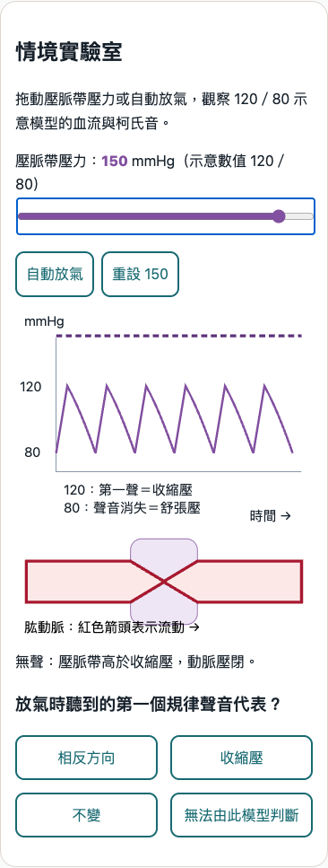

Heart II: 390 / 1280
114 screenshots. Click to view the original image.
blood-pressure-measurement · 390px

blood-pressure-measurement-390-cuff-150.pngblood-pressure-measurement-390-cuff-120.pngblood-pressure-measurement-390-cuff-100.pngblood-pressure-measurement-390-cuff-80.pngblood-pressure-measurement-390-cuff-70.pngblood-pressure-measurement-390-cuff-auto.pngblood-pressure-measurement-390-misconceptions.pngblood-pressure-measurement-390-blood-pressure-measurement-node-01.pngblood-pressure-measurement-390-blood-pressure-measurement-node-02.pngblood-pressure-measurement-390-blood-pressure-measurement-node-03.pngblood-pressure-measurement-390-blood-pressure-measurement-node-04.pngblood-pressure-measurement-390-blood-pressure-measurement-node-05.pngblood-pressure-measurement-390-blood-pressure-measurement-node-06.pngblood-pressure-measurement · 1280px
blood-pressure-measurement-1280-cuff-150.pngblood-pressure-measurement-1280-cuff-120.pngblood-pressure-measurement-1280-cuff-100.pngblood-pressure-measurement-1280-cuff-80.pngblood-pressure-measurement-1280-cuff-70.pngblood-pressure-measurement-1280-cuff-auto.pngblood-pressure-measurement-1280-misconceptions.pngblood-pressure-measurement-1280-blood-pressure-measurement-node-01.pngblood-pressure-measurement-1280-blood-pressure-measurement-node-02.pngblood-pressure-measurement-1280-blood-pressure-measurement-node-03.pngblood-pressure-measurement-1280-blood-pressure-measurement-node-04.pngblood-pressure-measurement-1280-blood-pressure-measurement-node-05.pngblood-pressure-measurement-1280-blood-pressure-measurement-node-06.png capillary-exchange · 390px
capillary-exchange-390-lab-state-1.pngcapillary-exchange-390-lab-state-2.pngcapillary-exchange-390-lab-state-3.pngcapillary-exchange-390-tree-unselected.pngcapillary-exchange-390-tree-up.pngcapillary-exchange-390-tree-down.pngcapillary-exchange-390-misconceptions.pngcapillary-exchange-390-capillary-exchange-node-01.pngcapillary-exchange-390-capillary-exchange-node-02.pngcapillary-exchange-390-capillary-exchange-node-03.pngcapillary-exchange-390-capillary-exchange-node-04.pngcapillary-exchange-390-capillary-exchange-node-05.pngcapillary-exchange-390-capillary-exchange-node-06.png capillary-exchange · 1280px
capillary-exchange-1280-lab-state-1.pngcapillary-exchange-1280-lab-state-2.pngcapillary-exchange-1280-lab-state-3.pngcapillary-exchange-1280-tree-unselected.pngcapillary-exchange-1280-tree-up.pngcapillary-exchange-1280-tree-down.pngcapillary-exchange-1280-misconceptions.pngcapillary-exchange-1280-capillary-exchange-node-01.pngcapillary-exchange-1280-capillary-exchange-node-02.pngcapillary-exchange-1280-capillary-exchange-node-03.pngcapillary-exchange-1280-capillary-exchange-node-04.pngcapillary-exchange-1280-capillary-exchange-node-05.pngcapillary-exchange-1280-capillary-exchange-node-06.png cardiac-electrical · 390px
cardiac-electrical-390-node-1.pngcardiac-electrical-390-node-4.pngcardiac-electrical-390-node-8.pngcardiac-electrical-390-misconceptions.png cardiac-electrical · 1280px
cardiac-electrical-1280-node-1.pngcardiac-electrical-1280-node-4.pngcardiac-electrical-1280-node-8.pngcardiac-electrical-1280-misconceptions.png